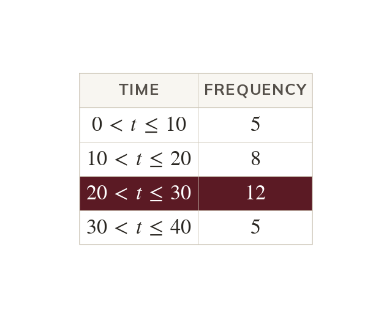
The modal class
The modal class is the class with the highest frequency. It is a class, such as not a single value.
Grouped data have no single most common value or middle value. Today we find the class that holds each one.
Work down the page at your own pace. Write every answer in your book first, then click to check it.
Read each card, then follow the worked examples one step at a time.

The modal class is the class with the highest frequency. It is a class, such as not a single value.
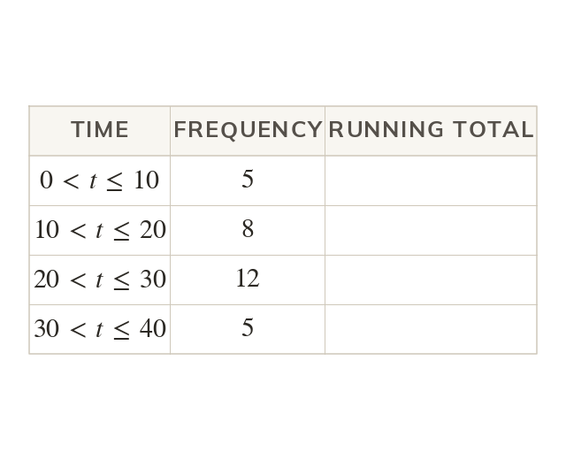
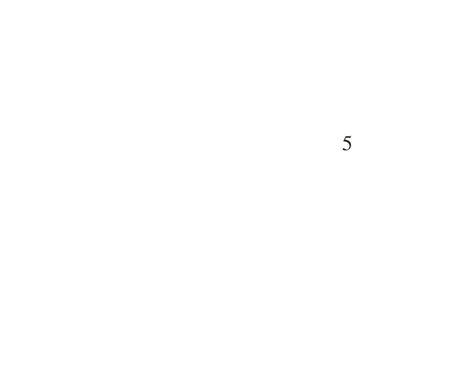
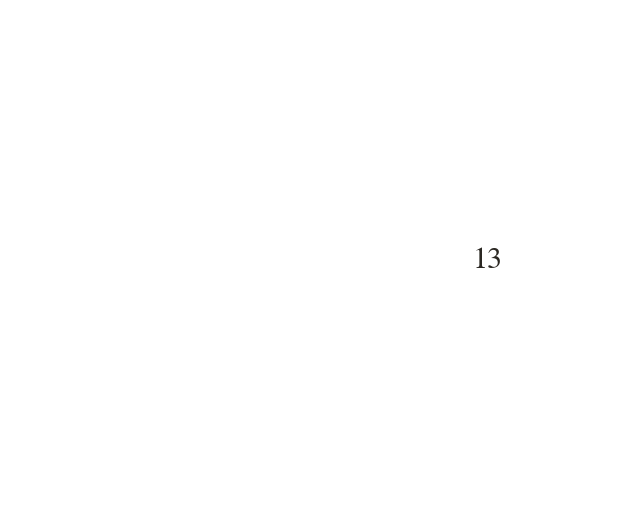
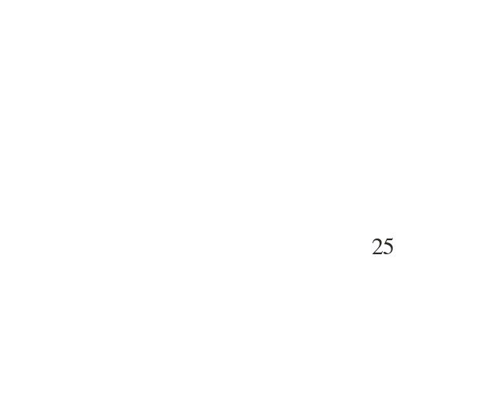
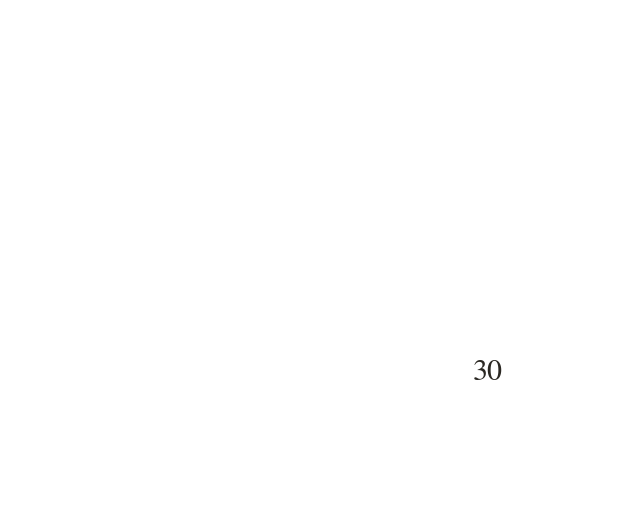
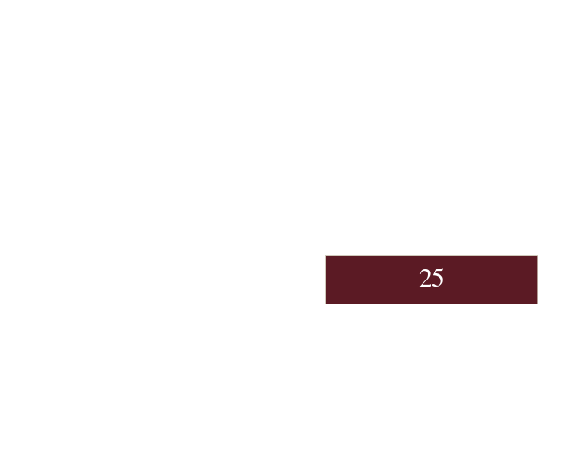
Count down the frequencies to position
With values, the 15.5th lies in
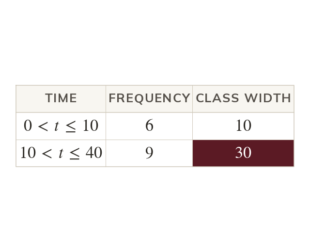
When classes have different widths, the highest frequency may come only from the widest class. So a modal class from unequal classes is quoted with care.
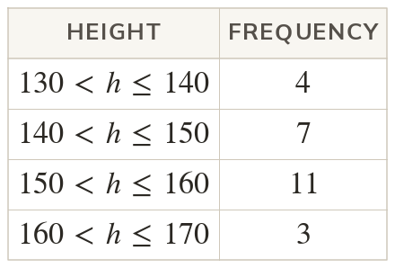
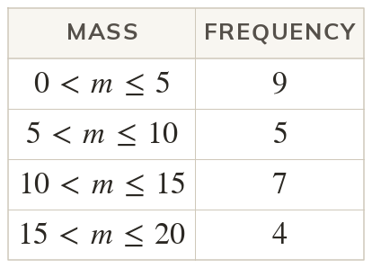
Pick an answer. If it's wrong, the feedback tells you which mistake it was.
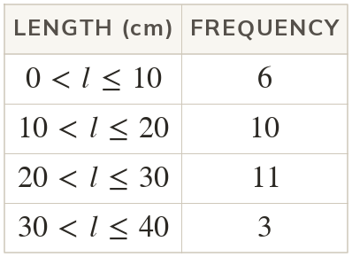
Read each card, then follow the worked examples one step at a time.
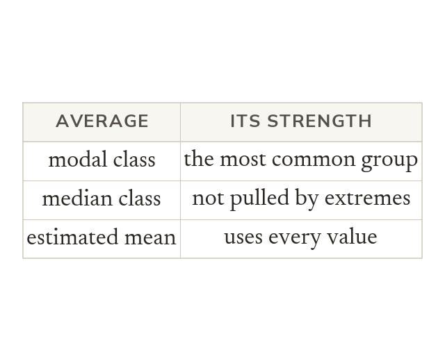
The modal class is the most common group. The median class is not pulled by an extreme class. The estimated mean uses every value, through the midpoints.
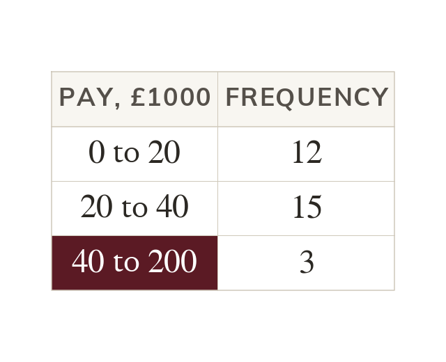
Justify a choice of average from the data. A few huge values in a wide top class favour the median class.
Pick an answer. If it's wrong, the feedback tells you which mistake it was.
Finished? Next lesson: 10.18.5 Comparing Two Distributions.
For each skill, tap the one that is true for you today. Your Revise pages start with anything you mark Not yet.
Your ratings are saved on this device only.
Log in, then search for a code to practise that skill.